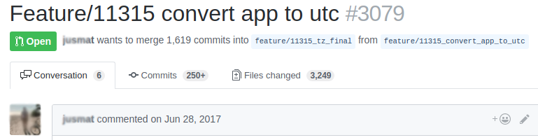

Vilnius Ruby Masters
Theory VS Reality
Where are we?

What will happen next?
- We will continue theodinproject
- We will will meet *every* week
- We will have ruby exam
- ???
- Profit
Dangers and how to avoid them

CSS: global selectors
img { border: 5px; }.fancy-image { border: 5px; }CSS: global selectors
img { border: 5px; }.fancy-image { border: 5px; }HTML: machine readable

Principle of least astonishment (POLA)
def display_status(log, options)
if log.pop == 'party: started'
options[:party] = true
end
print_event_info(options)
end
def display_status(log, options)
if log.first == 'party: started'
options = options.merge(party: true)
end
print_event_info(options)
end
Ruby: fancy caching
def calculate_or_return_fast
@result ||= very_sloooow_calculation
end
def very_sloooow_calculation
result = do_some_heavy_work_here
result > 0 ? result : nil
end
Ruby: constants
class User
OLDEST_LOG_DATE = (Date.today - 7)
def clean_old_logs
Logs.older_than(OLDEST_LOG_DATE).delete_all
end
end
class User
def clean_old_logs
Logs.older_than(self.class.oldest_log_date).delete_all
end
def self.oldest_log_date
(Date.today - 7)
end
end
Ruby: getter VS instance var
def initialize
@users = [User.new]
end
def do_something
foo(@users) if @users.first.active?
end
def users
@user ||= [User.new] # i can change it to [AdminUser.new]
end
def do_something
foo(users) if users.first.active?
end
GIT: to big PR
OOP: naming
# calculates active user friends count
def calculate_value
users.select(&:active).map { |user| user.friends.count }.sum
end
def active_users_friends_count
users.select(&:active).map { |user| user.friends.count }.sum
end
Our mistakes
kthxbai